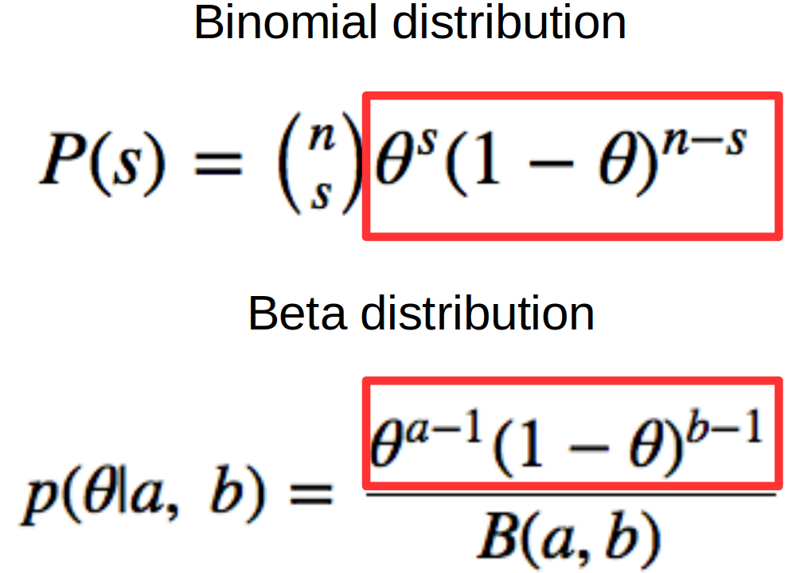

Bayes rule & distributions; Inference with conjugate priors
R
Bayes
Published
April 7, 2023
Introduction
In the last post we used Bayes theorem and grid approximation to estimate the probability of 4 different hypotheses about the proportion of students achieving a high mark in an undergraduate course. Specifically we examined proportions of 5%, 10%, 15% & 20%. For each proportion (hypothesis) we set a prior probability distribution \(P(H)\), used the binomial distribution to calculate the likelihood of the data we had for each of the prior probabilities, multiplied the prior probabilities and the likelihoods together and finally calculated the posterior distribution by dividing these products by their combined sum. Grid approximation is useful to see how the moving parts work but it doesn’t scale well and it’s not useful if we are dealing with continuous priors & likelihoods. For the student marks data we might want to consider any proportion for first class marks from 0 to 1.
Conjugate distributions
Sometimes we can derive the posterior distribution really easily (and exactly) with relatively simple algebra & some basic arithmetic. This is the idea behind conjugate distributions. Recall that we start a Bayesian analysis with a prior distribution which reflects the plausibility of a parameter before we see any data. We collect data and combine the data with the prior through the likelihood. The posterior distribution is the product of the prior and the likelihood. For some combinations of priors and likelihoods the posterior ends up being the same kind of distribution as the prior. This property is called conjugacy - the prior distribution is said to be conjugate to the posterior distribution. Conjugate priors can be used for some simple analyses and they greatly simplify the process of going from prior to posterior. In this post we’ll illustrate how conjugacy works by repeating the analysis of student marks; however instead of a grid of discrete proportions (i.e. 5%, 10%, 15% & 20%) we’ll consider any proportion from 0-100%.
The Binomial Distribution
The Binomial distribution tells us the probability of getting \(s\) successes in \(n\) trials if the probability of success is \(\theta\). Here success is defined (non-judgmentally) as a first class mark; >70% in the UK university system. The formula for the Binomial probability distribution is:
\(P(s) = {n \choose s}\theta^s(1-\theta)^{n-s}\)
The \({n\choose s}\) part is called the binomial coefficient and is calculated by \(\frac{n!}{s!(n-s)!}\). The \(!\) means factorial - \(4! = 4 \times 3 \times 2 \times 1\).
\(s\) is the number of successes
\(n\) is the total number of trials
\(\theta\) is the proportion (or probability) of success
The Binomial distribution is a discrete distribution because the number of trials (\(n\)) and the number of successes (\(s\)) can only be integers. In the current analysis the binomial distribution is useful in the likelihood function because in any set of trials the number of successes and failures will be integers.
We’re going to combine the Binomial likelihood with some prior distribution to estimate the proportion of successes. The prior distribution over the proportion of successes should therefore be continuous - any proportion between 0% and 100% is possible!
The Beta Distribution
We want a prior distribution that spans the range [0,1]. The continuous distribution for conjugacy in this context is the Beta distribution.
The Beta distribution has two parameters, \(a\) and \(b\) and is denoted as \(Beta(a,b)\). The density of the Beta distribution over a parameter, \(\theta\) has the form:
\[p(\theta| a,\ b) = \frac{\theta^{a-1}(1-\theta)^{b-1}}{B(a,b)}\]
where \(B(a,b)\) is the Beta function (not distribution) and acts as the normalising constant to ensure the area under the curve of the distribution sums to 1. The Beta function is:
\[B(a,\ b) = \int_0^1 d\theta\ \theta^{a-1}(1-\theta)^{b-1}\]
If we use a Beta prior and a Binomial likelihood the prior and the likelihood share some mathematical form and the resulting posterior is conjugate to the prior. This just means it’s easy to calculate the posterior distribution. The ‘same mathematical form’ parts of the Binomial & Beta distributions are shown in the figure below.

Beta-Binomial mathematical form equivalence
In both distributions we have \(\theta\) raised to some power and \(1-\theta\) raised to some power. This mathematical equivalence makes it easy to combine the prior and likelihood to form a posterior distribution.
Here \(\theta\) is a placeholder for the proportion we are trying to estimate.
We calculate the posterior distribution for \(\theta\) by multiplying the prior (here a \(Beta(a,b)\) distribution) by the likelihood - \(P(data|\theta)\) - here a binomial distribution.
The advantage of using a conjugate prior is that it simplifies the mathematics. In this case we have (ignoring the normalising constant in the denominator):
Since we’re multiplying the same quantities (\(\theta\) and \(1-\theta\)) raised to different powers we can use the Laws of Exponents and all we have to do is raise \(\theta\) and \(1-\theta\) to the sum of powers.
So \(\theta\) gets raised to \(a+s-1\) and \(1-\theta\) gets raised to \(b+n-s-1\).
See here for a refresher on the Laws of Exponents.
We end up with a posterior distribution:
\[\theta^{(a+s-1)}(1-\theta^{(b+n-s-1)})\]
The important point to note here is that our posterior distribution is:
\[
Beta(a, b)
\] where \(a = a+s\) and \(b = b+n-s\).
This makes it easy to calculate - we just add some numbers together! So cool!
Shape of the beta distribution
In the Beta distribution \(a\) and \(b\) should both be positive and together they describe the shape of a particular Beta distribution. The first parameter, \(a\) can be thought of as the mode of the distribution i.e. where most of our probability will pile up. In this sense \(a\) can be considered the ‘number of successes’ we think there should be. If we think there should be a lot of successes then the beta distribution will pile more probability closer to 1.
Here are several Beta distributions.
par(mfrow=c(2,3)) # plotting in grid; 2 rows, 3 colsx <-seq(0, 1, 0.01) # possible probsa=1; b=5# Beta(a,b) paramsfor (i inseq(0, 5)){ a_mod = a+i+5 y=dbeta(x, a_mod, b) # density of Beta distribution# plot the curvesplot(x, y, type="l", ylab='Prob', xlab=expression(theta), lwd=2,main =paste(paste('a=',a_mod), paste('b=',b), sep ='; '))}
Beta distributions
As \(a\) increases the mode of the distribution moves right indicating more belief in an increased probability of success (\(\theta\) on the x-axis). Conversely if \(a\) gets smaller then the mode moves left.
The sum, \(a+b\) controls the spread of the distribution and can be thought of as the ‘amount of evidence’, the plausibility, or my ‘belief’ in a particular probability of success. As \(a\) and \(b\) get bigger the sum \(a+b\) gets bigger and the distribution gets narrower piling more probability over some value of \(\theta\).
If \(a\) and \(b\) are the same number and > 1 then the distribution is symmetrical around 0.5. One special case is if \(a = b = 1\). In this case we have a uniform distribution over the whole probability range - a straight horizontal line.
Here are some more Beta distributions to illustrate some of those points.
As we add more ‘evidence’ (\(a+b\)) the Beta distribution gets narrower.
Setting a prior distribution
Getting back to our question of the proportion of students who get first class marks we’ll begin with flat prior i.e. we initially believe that any proportion from 0 to 100% is realistic. We can represent this belief in any proportion as a Beta distribution with \(a\) = 1 and \(b\) = 1.
The first year available to us is 2010 and we’ll use this data to calculate a posterior distribution for the proportion of students who get a first class mark.
# load packageslibrary(readr)library(dplyr)# get the datadata_in <-read_csv('data/c5_firsts.csv')ten <- data_in %>%filter(year==2010) # 2010 datasucc <- ten %>%tally(first) %>%pull() # all successesn <-nrow(ten) # all trials
We’ve read in the data, subset it down to just the 2010 data and calculated both the number of successes and the total number of trials.
Let’s set up and plot our prior Beta distribution.
# plot priora <-1b <-1# possible proportions (theta)x <-seq(0, 1, 0.001)# density of x under Beta(1,1) disty <-dbeta(x, a, b) # prior# plotplot(x, y, type='l', xlab =expression(theta), ylab =expression(paste('P(', theta, ')')))
A Uniform prior distribution (Beta(1,1))
As you can see this is a uniform distribution - the probability is exactly the same for every proportion (\(\theta\)) on the x-axis.
Now let’s calculate our posterior distribution. We just have to add the number of successes to the \(a\) parameter of our Beta prior; then calculate n minus successes and add that to the \(b\) parameter of our Beta prior. We’ll then plot our prior and our posterior together.
# calculate posteriorx <-seq(0, 1, 0.001)new_y <-dbeta(x, a + succ, b + n - succ) # posterior - so easy!# posteriorplot(x, new_y, type='l', lwd=2, xlab=expression(theta), ylab=expression(paste('P(', theta, ')')), col='darkorange3')# priorlines(x, y, type='l', lty=2, lwd=2)# labelslegend(x=0.6, y=max(new_y)-4, legend=c('prior', 'posterior'), col=c('black', 'darkorange3'), lty=c(2,1), bty='n')
Prior & posterior
Sweet! We’ve updated our view of the world based on some data. Where we thought every proportion was equally plausible before data actually suggests support for about 1-20%. And all we had to do was add some numbers together!
The posterior distribution is a Beta distribution. Let’s see what the parameters of that distribution are:
# Beta posterior parametersa_post <- a + succb_post <- b + n - succa_post
[1] 5
b_post
[1] 58
So \(a\) is 5 and \(b\) is 58 and the posterior is \(Beta(5,58)\).
Let’s see what the most probable proportion is. This is the mode of the posterior. The mode of a Beta distribution calculated as:
The best supported proportion (\(\theta\)) of first class students is about 6.6%.
What about a 95% probability interval for the true proportion? Well we can get that using the qbeta() function. We have to enter the probability interval we want and then the \(a\) and \(b\) parameters of the distribution.
If we want a 95% interval we need to have an interval such that 5% of the distribution is excluded and this means 2.5% from each end. So we need to enter 0.025 and 0.975 as the probabilities we want in qbeta()
# highest density intervalhdi <-qbeta(c(0.025, 0.975), a_post, b_post)hdi
[1] 0.02670462 0.15702808
This analysis would suggest there’s a 95% probability that the interval from about 3% to about 16% contains the true proportion of first class marks based on our data and our prior assumption of a uniform distribution over \(\theta\). This interval is called the Highest Density Interval (HDI) or Credible Interval (CI) and (unlike a 95% confidence interval) is directly interpretable as a probability of where \(\theta\) lies.
Let’s plot this interval.
The strategy for this is to plot the posterior distribution and then use the polygon() function to shade the posterior within the limits we define.
We first make a vector of x-values that go from the first quantile we want (0.027), along a sequence (seq(start, stop, gap)) to the last quantile we want (0.157).
We then make a vector of y-values to match this going from zero, up the density curve of our distribution (dbeta(seq(start, stop, gap), a, b)) and then back to zero. We plot this shape and colour fill it using the polygon() function.
The blue part is where we believe the true proportion, \(\theta\) of first class marks lies with 95% probability.
An informed prior
We’ll now examine the student data using a more informed prior. In the previous post my initial belief was that around 10% of students would achieve a first class mark and this is somewhat supported by the analysis above. To reflect my belief in 10% I’ll create a semi-informative Beta prior around 10%.
What should the parameters (\(a\) and \(b\)) of this Beta distribution be? One way to approach this is to consider that the mean proportion of successes will be \(m = a/(a+b)\) and the sample size (\(n\)) will be \(n = a+b\). From this we can see that \(a = m \times n\) and \(b = (1-m)n\).
The value of \(m\) is our guess for the mean value of \(\theta\) before we see data or based on our domain expertise - here that’s 0.1 (i.e. 10%). The value of \(n\) can be thought of as the amount of data we have previously seen which informs our prior guesstimate for \(\theta\). In this case although we’re guessing we’d feel somewhat happy basing our belief on 20 previous sets of trials.
Now we have values for \(m\) (0.1) and \(n\) (20) we can calculate \(a\) and \(b\).
\(a = m\times n = 0.1\times 20 = 2\)
\(b = (1-m)\times n = (1-0.1)\times 20 = 18\)
Our prior distribution over \(\theta\) is \(Beta(2, 18)\) & looks like this:
# paramsx <-seq(0, 1, 0.001)y <-dbeta(x, 2, 18)# plotplot(x, y, type='l', lwd=2, xlab=expression(theta), ylab=expression(paste('P(', theta, ')')), main ='Informed Prior')
An informed prior
You can see this is most strongly peaked over 10%. Now we’ll simply repeat the analysis we did above with our new, informed beta prior.
# set priora <-2b <-18# posteriornew_y <-dbeta(x, a + succ, b + n - succ)# plot posteriorplot(x, new_y, type='l', lwd=2, xlab=expression(theta), ylab=expression(paste('P(', theta, ')')), col='darkorange3')# plot priorlines(x, y, type='l', lty=2, lwd=2)# legendlegend(x=0.6, y=max(new_y)-4, legend=c('prior', 'posterior'), col=c('black', 'darkorange3'), lty=c(2,1), bty='n')
Informed prior and posterior
The more informed prior has led to a posterior distribution that is more tightly peaked over 10%. The mode and 95% HDI for this new posterior distribution are:
# posterior paramsa_post <- a + succb_post <- b + n - succ# posterior modepost_mode <- (a_post-1)/(a_post + b_post-2)post_mode
One of the best features of Bayesian analysis is that it’s easy to update your knowledge as you sequentially collect more data. We can often just treat the posterior from a previous analysis as the prior for a new analysis. This kind of sequential analysis is harder in the frequentist world.
We have data here from 2010 until 2015. Imagine we analysed this data as we went along from year to year. We might start in 2010 with the informative prior around 10% as we did in the analysis above. To examine the 2011 data we could use the posterior distribution from 2010 as the prior distribution for 2011 and so on.
We do that in the code below and generate a grid of plots showing how the posterior distribution evolves over time.
par(mfrow=c(2,3)) # grid for plots# get the datadata_in <-read_csv('data/c5_firsts.csv')
Rows: 402 Columns: 3
── Column specification ────────────────────────────────────────────────────────
Delimiter: ","
chr (1): module
dbl (2): year, first
ℹ Use `spec()` to retrieve the full column specification for this data.
ℹ Specify the column types or set `show_col_types = FALSE` to quiet this message.
# get the unique yearsyears <-unique(data_in$year)# set chosen priora <-2b <-18# for loopfor(i in1:length(years)){# subset the data yr_data <- data_in %>%filter(year == years[i])# calculate successes and total trials succ <-sum(yr_data$first) n <-nrow(yr_data)# set values for initial prior plot x <-seq(0,1, 0.001) y <-dbeta(x, a, b)# calculate a & b for Beta posterior a <- a + succ b <- b + n - succ# calculate the posterior & mode new_y <-dbeta( x, a, b) md <- (a-1)/(a+b-2) # make plotsplot(x, new_y, type='l', lwd=2, xlab=expression(theta), ylab=expression(paste('P(', theta, ')')),main=years[i], col='darkorange3')mtext(paste('Posterior Mode: ', round(md,2), sep=''), side=3, cex=0.9)lines(x,y, type='l', lty=2, lwd=2, col='black')legend(x=0.5, y=max(new_y)-1, legend=c('prior', 'posterior'), col=c('black', 'darkorange3'), lty=c(2,1), bty='n', cex=0.8)}
Updating posteriors
There are a few things to note here. Firstly we can see that as we collect more data over the years the proportion of first class marks does indeed approach 10% 😁 Secondly it’s also apparent that as we collect data over the years the posterior becomes progressively narrower; we become more & more confident about the actual proportion. However even by 2015 with a total of 400 datapoints collected over the years there is still some width to the posterior. We’re close to 10% but not entirely sure!
Impact of a poor prior
In Bayesian analysis the posterior distribution is a compromise between the prior and the likelihood. The prior can therefore have quite a strong effect on the posterior - especially if data is limited. In the analysis below we see the effect that an initial prior with a mode of 0.8 has on our parameter estimate. Given that my initial guess for the proportion of students getting a first class mark was ~10% this prior, which best supports 80% is not particularly sensible.
par(mfrow=c(2,3)) # plot grid# set poor prior; calculation as above but with a mean of 0.8 instead of 0.1a <-16b <-4# for loopfor(i in1:length(years)){# subset data yr_data <-subset(data_in, data_in$year==years[i])# successes & total trials succ <-sum(yr_data$first) n <-nrow(yr_data)# set values for initial prior plot x <-seq(0, 1, 0.001) y <-dbeta( x, a, b)# calculate new a & b for Beta posterior a <- a + succ b <- b + n - succ# calculate posterior and mode new_y <-dbeta( x, a, b) md <- (a-1)/(a+b-2)# plotsplot(x, new_y, type='l', lwd=2, xlab=expression(theta), ylab=expression(paste('P(', theta, ')')),main=years[i], col='darkorange3')mtext(paste('Posterior Mode: ', round(md,2), sep=''), side=3, cex=0.7)lines(x,y, type='l', lty=2, lwd=2, col='black')legend(x=0.5, y=max(new_y)+0.1, legend=c('prior', 'posterior'), col=c('black', 'darkorange3'), lty=c(2,1), bty='n', cex=0.8)}
Data will overwhelm an uninformative prior
Although the estimate of \(\theta\) starts off at 80% (prior in the top left plot) we can see that the data pulls the posterior distribution over to the lower end of the possible proportions. Once we have analysed all our data the prior and posterior are approaching the same estimate as before. This demonstrates that enough data will overwhelm a poor choice of prior. However you may not always have a lot of data! The width of the prior also makes a difference. If we are very confident about a value then we might have a very narrow prior over that value. It then takes more data to shift that prior to other values.
Other conjugate priors
In this post we have concentrated on the Beta-Binomial to illustrate the idea and use of conjugate priors. However there are other conjugate combinations. The illustration below from John Cook shows some of these.
Common Conjugate Distributions
A much fuller account of conjugate priors is given in Chapter 5 of the excellent Bayes Rules online book. The bayesrules package which accompanies the book has useful functionality for conjugate prior analysis.
library(bayesrules)library(ggplot2)# plot prior, posterior & likelihoodplot_beta_binomial(alpha =2, beta =18, y =sum(ten$first), n =nrow(ten)) +theme_bw()
# summarise posteriorsummarize_beta_binomial(alpha =2, beta =18, y =sum(ten$first), n =nrow(ten))
model alpha beta mean mode var sd
1 prior 2 18 0.10000000 0.05555556 0.0042857143 0.06546537
2 posterior 6 75 0.07407407 0.06329114 0.0008364281 0.02892107
The summary value for the posterior mode using the 2010 data are the same as we got above with our informed prior.
Summary
In this post we have looked at conjugate priors. In the context of Bayesian inference conjugacy means that the posterior distribution is in the same mathematical family as the prior distribution. Conjugate priors make Bayesian inference computationally tractable because we can go from prior to posterior with simple arithmetic. However there are not many conjugate distributions and realistic data analysis often cannot be addressed with a conjugate analysis. Usually we have to use more computationally intensive methods like Monte Carlo Markov Chain (MCMC) to define the posterior distribution. We’ll examine MCMC approaches to Bayesian inference in the next post.